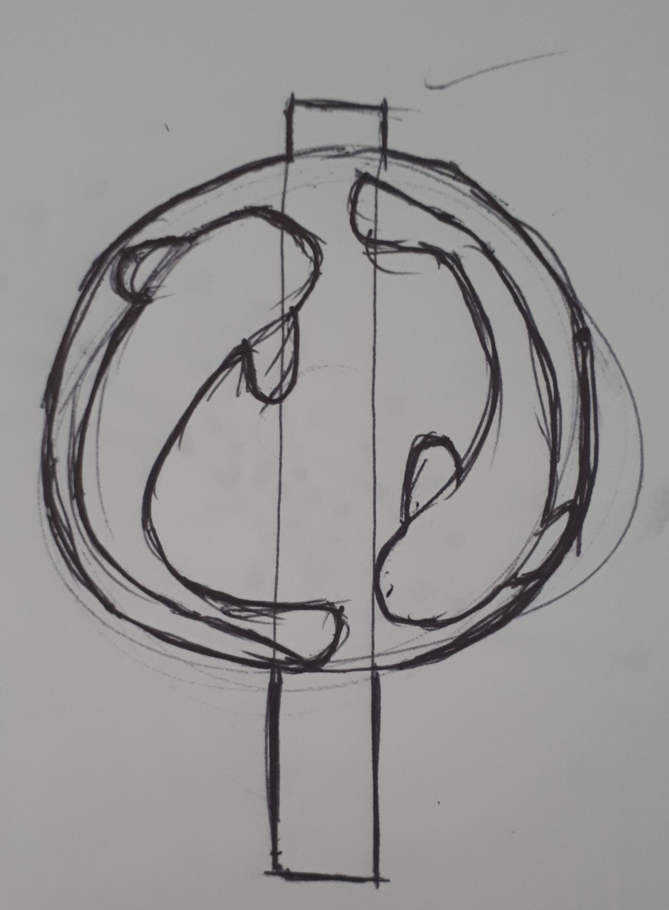
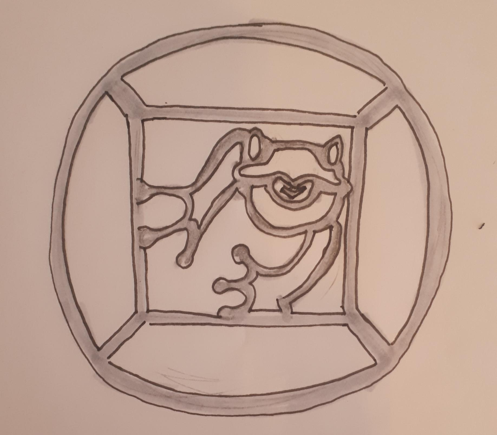
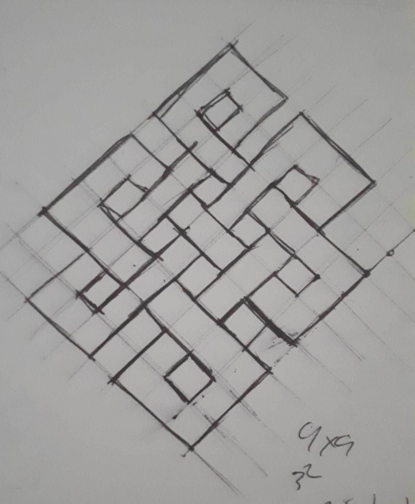

The Problem
Chinatown's shops sit close enough together that biking between them is often more practical than driving, but I saw locking up on-street as an opportunity to make the streetscape more distinctly Chinatown's own rather than purely functional infrastructure. My brief was to pitch a concept for a bike ring for the stretch of Chinatown between Spadina and Beverly.
That meant I had to design within how bike locks actually attach: U-lock, chain, or dual, each dictating a different ring geometry, and in a material suited to standing outside, unmaintained, for years.
Process

I worked early form studies around how the ring would actually mount to a sidewalk post, and my material research led me to Corten steel, chosen for how its surface changes in place: starting orange and weathering to a dark grey over roughly 40 years, with most of the shift happening in the first five.

I grounded the ring's imagery in Chinese cultural symbolism rather than decoration for its own sake: red for prosperity, green for wealth and harmony. I chose the final money-frog motif specifically as a direct Feng Shui nod, "intended to be placed outside their property" for the benefit of Chinatown's own business owners. I read the site practically too: I ruled out an animal motif for placement outside a restaurant in favor of something more broadly appropriate.

From there, 30 ideation sketches and three rounds of critique narrowed my direction to koi, Chinese-knot, and money-frog motifs. I developed them through to print-ready art and laser-cut them from ¾-inch Corten steel, building the final geometry out in orthographic CAD before fabrication.
On site


Outcome / Reflection
Seeing the prototype in place confirmed what I was aiming for: it read clearly as a bike ring, and it fit naturally into the Chinatown streetscape rather than looking like an add-on. Looking ahead, my next step would be gathering insight directly from one of the local shop owners, grounding the motif in a specific cultural story that actually emerged from the neighborhood, rather than a general reading of Chinatown symbolism.